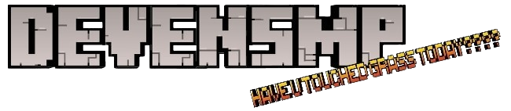

Community
Gaming, events, and shared experiences created with the community.
Gaming · Technology · Community

DevenSMP began as a Minecraft community and has grown into an ecosystem of gaming projects, software experiments, digital media, and collaborative experiences.
The ecosystem
DevenSMP brings together community projects, development experiments, digital content, and events under one ecosystem.
Gaming, events, and shared experiences created with the community.
Websites, software, documentation, and technical experiments.
Gaming videos and digital content from the DSMP media division.
Currently building
Get involved
Explore our projects, learn about the ecosystem, or join the community.
Explore DevenSMP